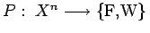
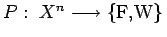

Inhalt Index DeskTop Bronstein

 Algebra und Diskrete Mathematik Logik Ausdrücke der Prädikatenlogik
Algebra und Diskrete Mathematik Logik Ausdrücke der Prädikatenlogik


Dabei werden die betrachteten Objekte zu einem Individuenbereich X, z.B. Menge  der natürlichen Zahlen, zusammengefaßt. Eigenschaften der Individuen, z.B. ,,n ist eine Primzahl``, und Beziehungen zwischen Individuen, z.B. ,,m ist kleiner als n``, werden als Prädikate bezeichnet. Ein n-stelliges Prädikat über dem Individuenbereich X ist eine Abbildung , die jedem n-Tupel von Individuen einen Wahrheitswert zuordnet. So sind die oben angeführten Prädikate über den natürlichen Zahlen ein- bzw. zweistellig.
der natürlichen Zahlen, zusammengefaßt. Eigenschaften der Individuen, z.B. ,,n ist eine Primzahl``, und Beziehungen zwischen Individuen, z.B. ,,m ist kleiner als n``, werden als Prädikate bezeichnet. Ein n-stelliges Prädikat über dem Individuenbereich X ist eine Abbildung , die jedem n-Tupel von Individuen einen Wahrheitswert zuordnet. So sind die oben angeführten Prädikate über den natürlichen Zahlen ein- bzw. zweistellig.